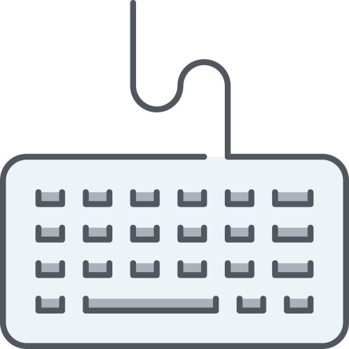
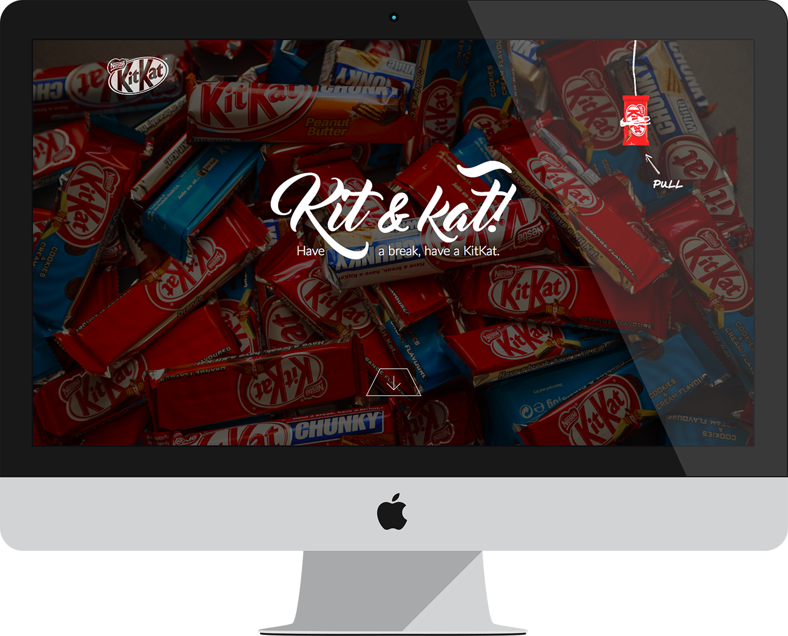
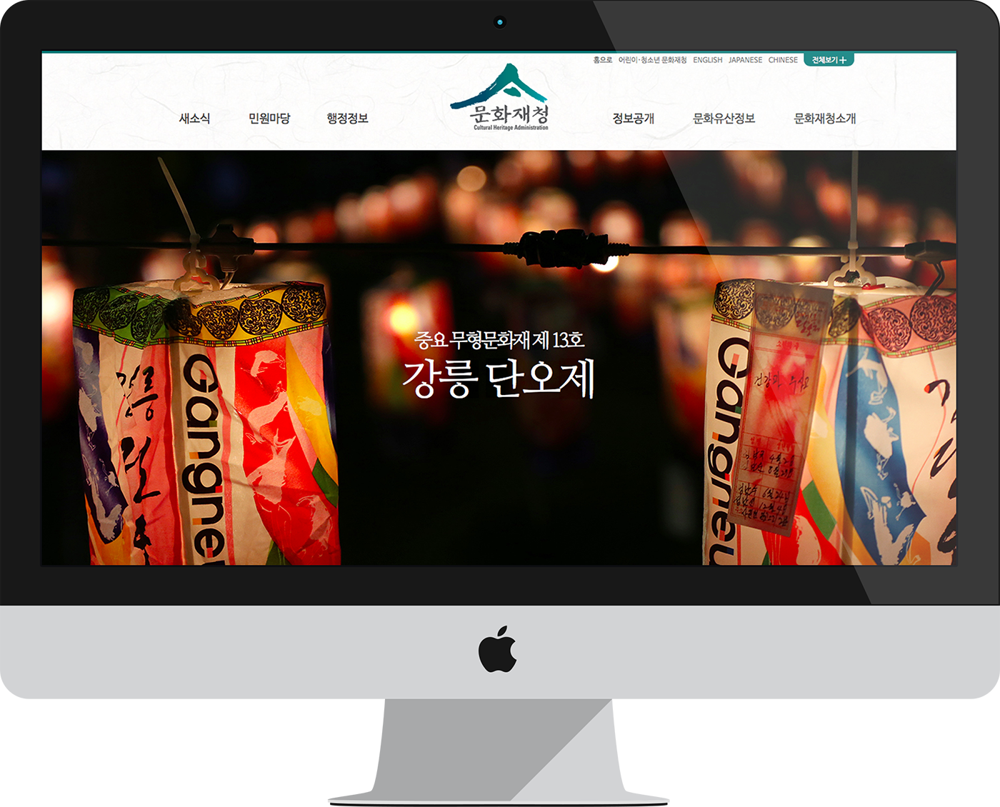
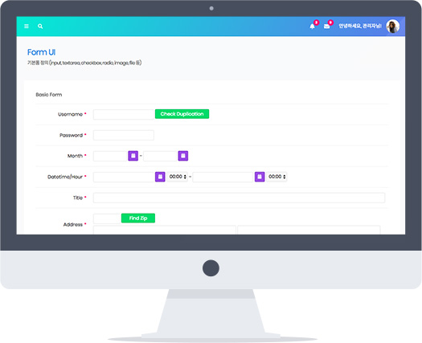

새 별처럼. Like a new star.
안녕하세요. 깊이 생각하는 퍼블리셔 강새별의
개인 포트폴리오 사이트입니다.

코드를 짜고 UI를 만드는 즐거움으로 성장하는 퍼블리셔 강새별
디자이너 경력과 커뮤니케이션 능력으로 동료와 클라이언트의 니즈 모두를 잡는 퍼블리셔.
사람을 위하는 방향으로 빠르게 발전하고 있는 웹 퍼블리싱.
이 흐름에 발 맞추고, 나아가 흐름을 주도하기 위해 끊임없이 공부할 것을 약속드립니다.
사람을 위한 웹 공간으로 회사의 성장을 구현하는 웹 퍼블리셔 강새별입니다. 잘 부탁드립니다.
Education & Career
- (주)앤드와이즈 프로젝트 2팀 웹 퍼블리셔
- - 2018. 9. 17 ~ 재직중
- - 이화여자대학교 메인 홈페이지 구축
- - 충남대학교 학과/부속기관 사이트 구축
- - 연세대학교 산학협력단 홈페이지 구축
- - 성북문화재단 아리랑 시네센터 홈페이지 구축
- - 상명대학교, 국무조정실 국무총리비서실 웹 접근성 보완 작업
- - CMS 사용법 시연 및 교육
- - 그 외 대학, 국가기관 홈페이지 구축 사업 참여 및 유지보수
- 아카데미 정글 WPPP 과정 수료
- - 2018. 07. 02 ~ 09. 14. (10주)
- - 미디어쿼리를 이용한 반응형 웹사이트 제작
- - 웹접근성 준수 방법 및 센스리더(스크린리더) 테스트
- - jQuery 사용자 정의 메소드를 이용한 라이브러리 제작
- 웹에이전시 (주)베이스노트 웹디자인팀 디자이너
- - 2016. 05. ~ 2017. 07. (1년 3개월)
- - 브랜드 웹사이트 메인 및 서브 페이지 디자인
- - HTML, CSS, XML를 이용한 웹사이트 유지보수
- - 엽서, 명함 등 인쇄물 제작
- - 영상편집 등 다양한 멀티미디어 컨텐츠 제작 등
- 하이디미어 디지털디자인 과정 수료
- - 2015. 10. ~ 2016. 02. (5개월)
- - HTML5, CSS3을 이용한 웹표준 코딩
- - jQuery(플러그인 활용 및 간단한 Javascript)
- - 포트폴리오 제작 및 실무 프로젝트
Skills
- HTML
- - HTML5 시맨틱 마크업
- - 웹 접근성 관리 (WAI-ARIA)
- CSS
- - CSS3
- - 반응형 페이지 제작 (미디어쿼리)
- Javascript
- - Pure Javascript
- - jQuery
- - jQuery UI, iScroll, Air Calendar 등 라이브러리 활용
- etc.
- - Git 버전 관리
- - SEO에 대한 이해

국민건강보험공단
Official Website
Renewal
- Viewport반응형
- IE SurpportIE9+
- 참여도퍼블리싱 100%
- 구성Main Page
메인 메뉴 구조의 통일
웹 접근성 관리 (WAI-ARIA)
jQuery 사용자 정의 함수로 만든 슬라이드 (Mobile Swipe)

Nestle Kitkat
Official Website
Renewal
- ViewportPC형
- IE SurpportIE10+
- 참여도디자인, 퍼블리싱 100%
- 구성Main Page
CSS3와 jQuery 사용자 정의 함수를 이용한 인터렉티브 모션
마우스 커서를 따라 움직이는 백그라운드 이미지
카운팅 애니메이션
상품 리스트 무한 슬라이드

Cultural Heritage
Administration Site
Renewal
- ViewportPC형
- IE SurpportIE10+
- 참여도디자인, 퍼블리싱 100%
- 구성 (링크) Main Page, Sub Page 1, Sub Page 2
효율적인 소스 관리를 위한 PHP include 방식
Shift + Tab 키로도 이용 가능한 메인 메뉴
서브 페이지의 페이지 표시 기능

Administrator Page
Basic Form UI &
UI Elements
- ViewportPC형
- IE SurpportIE10+
- 참여도디자인, 퍼블리싱 100%
- 구성 (링크) Basic From UI, Layout, Buttons
사이트의 통일성과 작업 속도 향상을 위한 정확한 가이드
클래스로 모듈화하여 만든 폼, 버튼, 레이아웃 서식
iScroll, Date Picker 라이브러리 활용